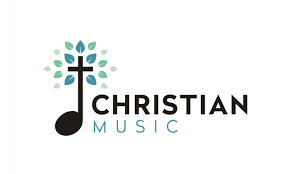

Nativo del sur de California, comenzó a tocar la guitarra con tan sólo 12 años y mostró también una gran habilidad para cantar y componer su propia música. Al acabar la escuela secundaria, ya había llegado a ser altamente competente en el canto, la composición de música e incluso había completado su primer álbum como aficionado, Spotlight. Su posterior debut nacional, Giants, se convirtió en un éxito inmediato y abrió las puertas a la producción de Yo Soy Segundo, con los amigos Bob Curtin Sean Cook y Ryan Cook. En 2012 lanzó su primera grabación en español, «Yo soy segundo», una mezcla de pop, rock. Evan Craft cantando en su estudio una de sus canciones pero en versión acústica «Yo soy segundo» es su segunda producción discográfica, después de su debut con el exitoso álbum,«Giants», lanzado en los Estados Unidos en marzo pasado por EMI Christian Music Group. En él, Evan Craft incluyó un corte en español que tuvo una gran respuesta, lo cual le inspiró a pensar en una producción completa en ese idioma.

El año pasado se anunciaba en medio del concierto de Redimi2 un avance del gran proyecto que comenzaba a soñar a miles
de cristianos en Bolivia sobre el 1ro Festival de Musica Cristiana, donde años se esperaba tener una gra noche,
con los mas conocidos musicos de la movida cristiana, una noche de adoracion al Rey de Reyes y Señor de Señores.
Generacion Radical es un grupo de personas que organizan eventos en el ambito cristiano, como ellos dicen: "Entretenimiento sano"
donde ya años este grupo ha trabajado y ha traido a grandes artistas y predicadores hasta la fecha: